Pos Commission And Bills is designed for businesses that rely on POS sales performance and need a reliable, automated way to calculate commissions and generate settlement bills. No more spreadsheets, no more manual errors, no more end‑of‑day chaos. This module brings clarity, automation, and fairness to your POS operations.
Set commission rates for consignment products
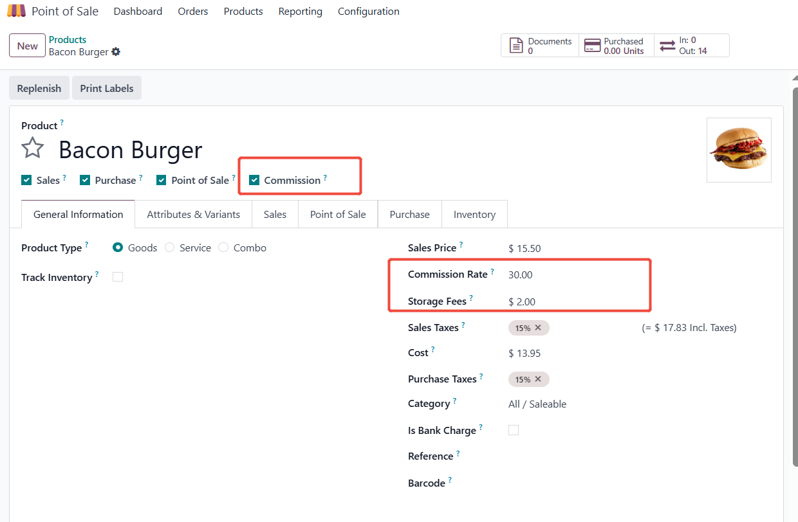
Each product will automatically display a default commission rate. Salespeople can also customize the commission rate.
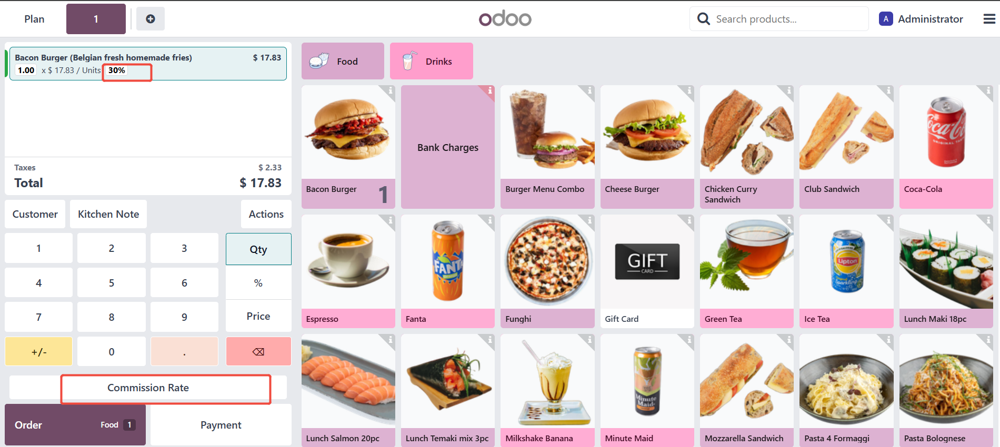
Salespeople can customize their commission rates.
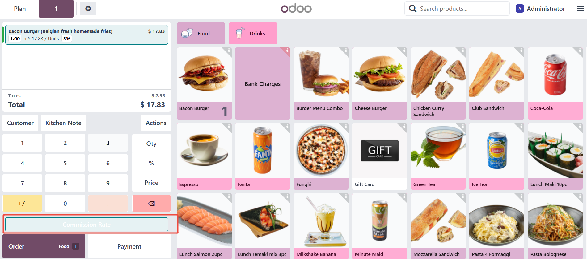
A separate POS order line makes it easier to view consignment orders.
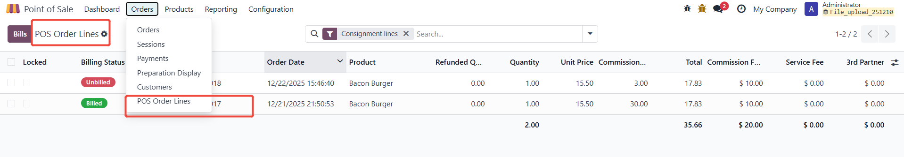
Appropriate filtering criteria can help administrators easily find several orders.
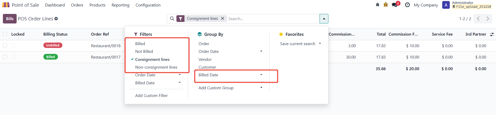
Administrators can lock and unlock orders. Locked orders cannot be billed.
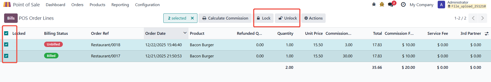
The system automatically calculates commission rates and amounts, service fees, etc.
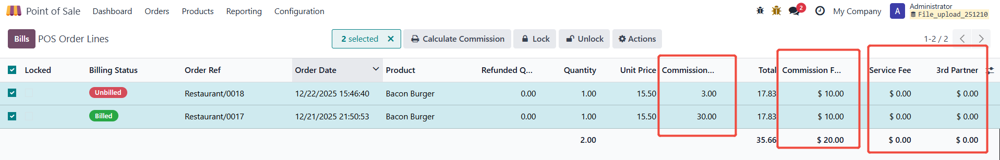
Select several order lines to automatically generate bills and send them to the consignor.
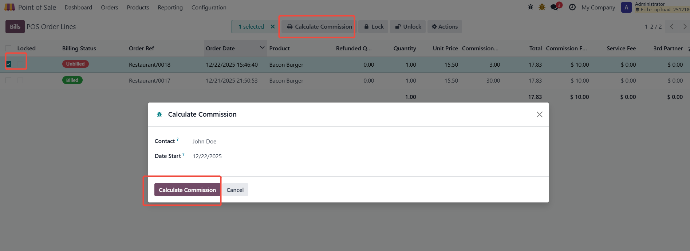
Automatically calculate commission amount.
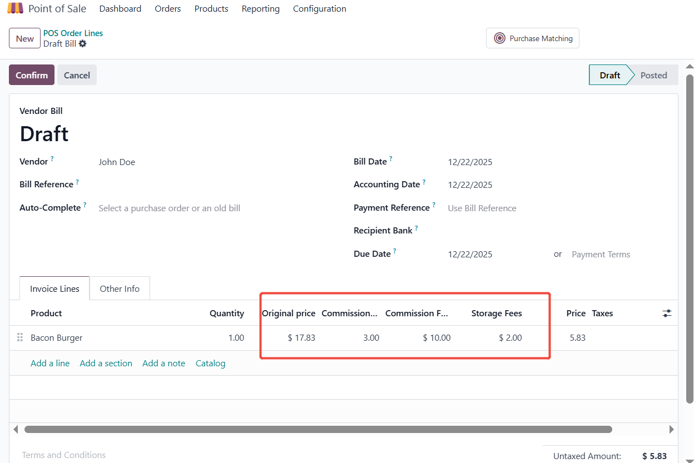
After the order is confirmed and sent to the consignor, the status of the original POS order line changes to billed.
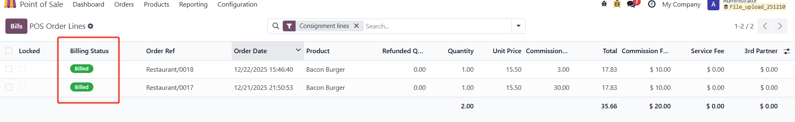
There is a button that takes you directly to the bills list.
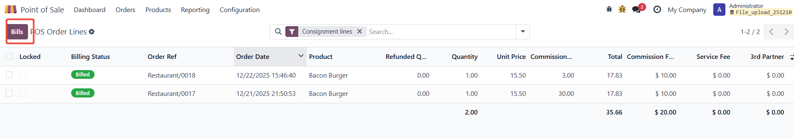
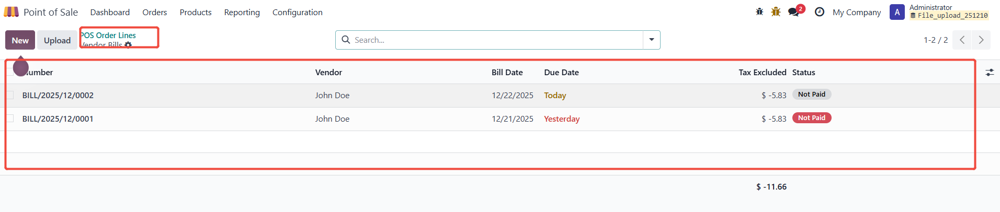
A consignment report can be printed based on the selection criteria.
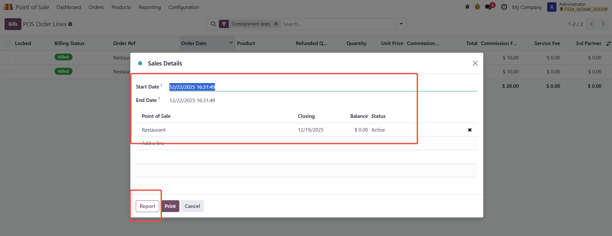
You can view consignment details, sales revenue, various payment methods, and other financial reports for a given period.
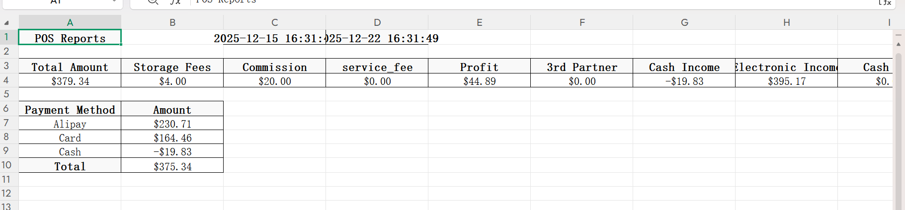
There are also PDF reports that can display sales data.
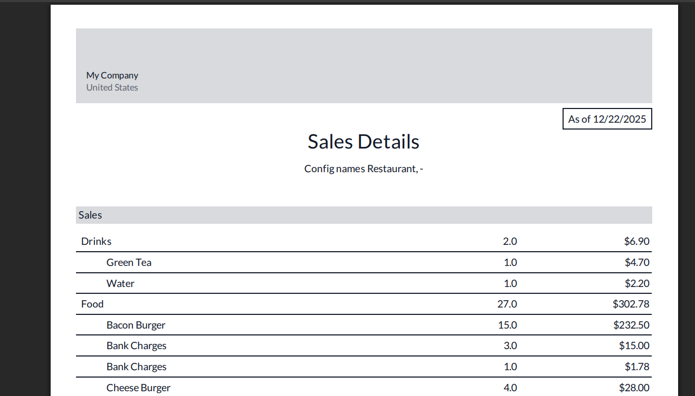
If you have any questions or require additional customization, please contact me at 18418630181@163.com. Buying offline will be cheaper.